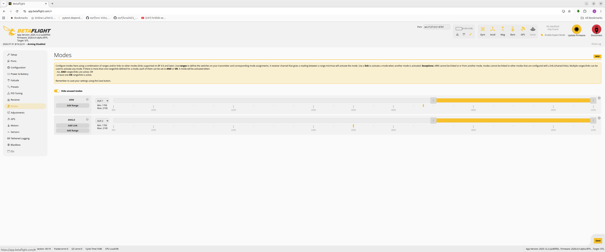
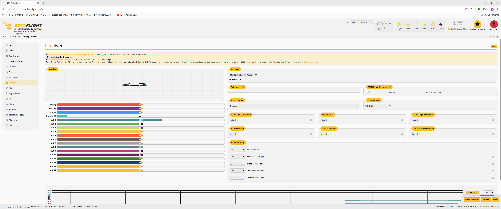
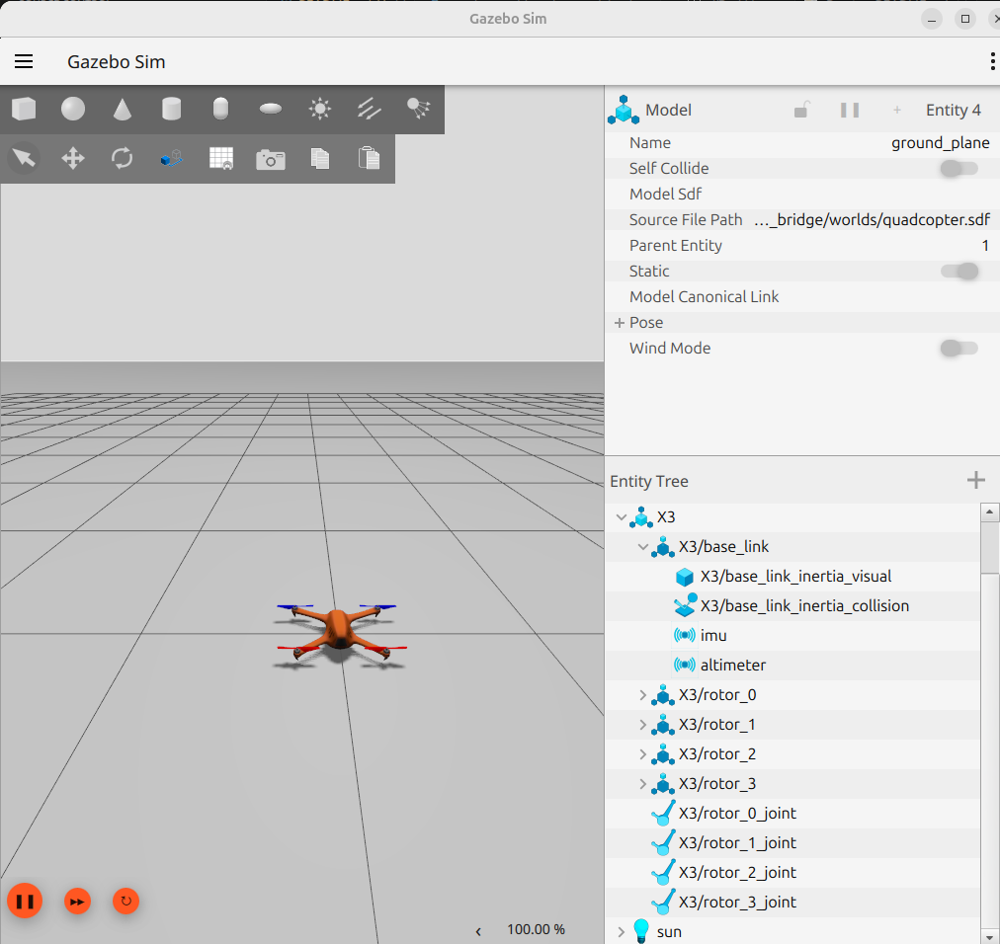
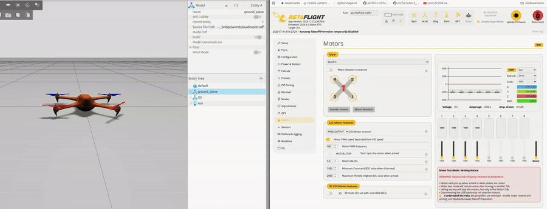

Gazebo Betaflight SITL bridge
gz_betaflight_bridge is a standalone C++ bridge between Betaflight SITL and Gazebo Sim Harmonic. Gazebo simulates the vehicle and sensors, Betaflight calculates motor outputs, and the bridge translates data between their transport formats.
Data flow
sequenceDiagram
participant GZ as Gazebo Sim
participant BR as gz_betaflight_bridge
participant BF as Betaflight SITL
GZ->>BR: IMU and altimeter topics
BR->>BF: FDM packet (UDP 9003)
BF->>BR: Motor packet (UDP 9002)
BR->>GZ: gz.msgs.ActuatorsThe bridge converts Betaflight's normalized motor commands into rotor velocities for Gazebo's MulticopterMotorModel. Betaflight's MSP interface remains available on TCP port 5761 for the Betaflight App and Python controllers.
| Endpoint | Direction | Purpose |
|---|---|---|
| Gazebo IMU and altimeter topics | Gazebo → bridge | Simulated sensor feedback |
UDP 9003 |
Bridge → Betaflight | Flight dynamics model packet |
UDP 9002 |
Betaflight → bridge | Motor output packet |
/X3/gazebo/command/motor_speed |
Bridge → Gazebo | gz.msgs.Actuators rotor command |
TCP 5761 |
Client ↔ Betaflight | MSP configuration and control |
WebSocket 6761 |
Browser → TCP 5761 |
Betaflight App connection through websockify |
Get the project
The repository includes the bridge source, an X3 quadcopter model, a Gazebo world, a Betaflight SITL executable, configuration files, launch scripts, and MSP control examples.
Prerequisites
- Ubuntu with Gazebo Sim Harmonic development packages
- CMake 3.23 or newer
- Ninja
- A C++20 compiler, such as GCC 13
yaml-cppandspdloguvfor the optional Python environment and websockify- VS Code with C/C++ and CMake Tools when using the supplied tasks
Install the core build tools:
Install the Gazebo Harmonic development packages appropriate for your Ubuntu installation before configuring the project.
Build the bridge
The repository provides a debug CMake preset:
The resulting executable is:
Create the optional Python environment and install websockify:
Configure Betaflight SITL
Connect to Betaflight SITL and apply the following CLI batch. It enables MSP receiver input and maps AUX1 to ARM and AUX2 to ANGLE mode:


Gazebo model
The world in worlds/quadcopter.sdf includes the local X3 model from models/betaflight_x3/model.sdf. Each rotor uses Gazebo's MulticopterMotorModel system and reads one actuator index from the bridge's motor-speed message.

The key tuning values are:
<maxRotVelocity>: the maximum simulated rotor speed.<motorConstant>: converts squared rotor speed to thrust.<momentConstant>: controls reaction torque.<turningDirection>: sets clockwise or counter-clockwise rotation.motors.max_rotor_velocity_rad_sinconfig/bridge.yaml: must match the Gazebo rotor limit.
Gazebo calculates rotor thrust using:
If the vehicle needs excessive throttle to lift, verify that the bridge and model velocity limits match before changing the motor constant.
Run the complete stack
VS Code tasks
Open the Command Palette and select:
The task starts four terminals:
| Task | Command |
|---|---|
| Gazebo | scripts/run_quadcopter_world.sh -r |
| Betaflight SITL | scripts/run_betaflight_sitl.sh |
| Bridge | scripts/run_bridge.sh config/bridge.yaml |
| websockify | uv run websockify 127.0.0.1:6761 127.0.0.1:5761 |
tmuxp
For a terminal-only workflow, install tmux and tmuxp, then load the supplied session:
The session runs Gazebo, SITL, the bridge, and websockify in tiled panes.
Connect the Betaflight App
With websockify running, open the browser-based Betaflight App and use its manual connection option:
The proxy forwards the browser's WebSocket connection to Betaflight's MSP TCP server on 127.0.0.1:5761.
Verify motor order
Start the complete stack and confirm that each Betaflight motor output drives the expected Gazebo rotor before attempting flight. An incorrect motor index or turning direction can produce immediate roll or yaw instability.

Try MSP hover control
After the bridge is receiving Gazebo sensor data, start the included Python hover controller in another terminal:
Treat these gains and the hover-throttle value as starting points. They depend on the simulated vehicle mass, motor model, and rotor-speed mapping.
Troubleshooting
- No sensor feedback: confirm Gazebo publishes the configured IMU and altimeter topics and that UDP
9003is free. - No motor response: check UDP
9002, the actuator topic, motor indices, andconfig/bridge.yaml. - Betaflight App cannot connect: verify SITL listens on TCP
5761and websockify listens on WebSocket6761. - Vehicle flips on takeoff: recheck Betaflight motor order, actuator indices, and every rotor's turning direction.
- Weak or excessive thrust: match
max_rotor_velocity_rad_swith<maxRotVelocity>, then tune the motor constant.
Project documentation
The repository contains deeper notes on configuration, packet formats, coordinate frames, motor modeling, observability, joystick control, MSP hover control, and autonomous test scenarios. Start with the project README and the documentation index.